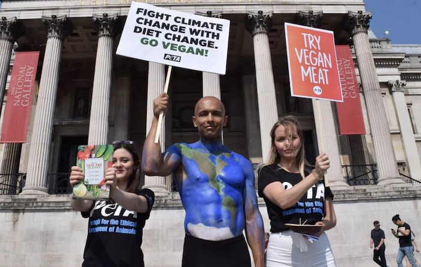

Why go vegan?
For Animals
The meat, fishing, egg, and dairy industries are a nightmare for animals, who are treated like a collection of body parts rather than the sentient individuals they are. All animals reared for food suffer. Females are repeatedly forcibly impregnated. Babies are torn away from their mothers, mutilated, and kept in filthy and severely crowded conditions. Then, often when they’re only a few months old, they endure a stressful and terrifying trip to the abattoir, where many are killed while still conscious.Fish are taken from their ocean homes and forced to endure a gruesome death by suffocation aboard huge fishing boats. Those who survive the gruelling journey back to port and onwards to market are gutted on arrival.
Chickens can live for more than a decade, but hens raised for their eggs can keep up intensive laying for only about two years. When their production begins to wane, they’re shipped off to slaughter. Because male chicks can’t lay eggs and haven’t been bred to produce excessive flesh for meat, they’re regarded as useless and gassed, tossed in the bin, or dropped into a high-speed meat grinder and minced alive.
For the planet
You can’t be a meat-eating environmentalist. The fishing, meat, dairy, and egg industries aren’t just relentlessly cruel to animals – they’re also a nightmare for the environment.

Researchers at the University of Oxford found that if everyone went vegan, we could reduce our carbon footprint from food by up to 73%, resulting in a significant drop in greenhouse-gas emissions. The study’s lead author, Joseph Poore, highlights the massive impact of ditching meat, dairy, and eggs: Quote: “A vegan diet is probably the single biggest way to reduce your impact on planet Earth …. It is far bigger than cutting down on your flights or buying an electric car.” Scientists agree that vegans have a lower dietary carbon footprint than vegetarians and meat-eaters do, so the easiest way to help slow down climate change immediately is to go vegan.